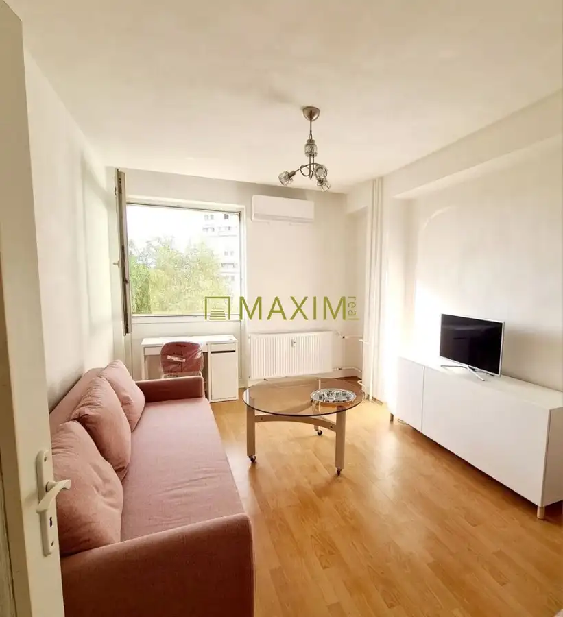
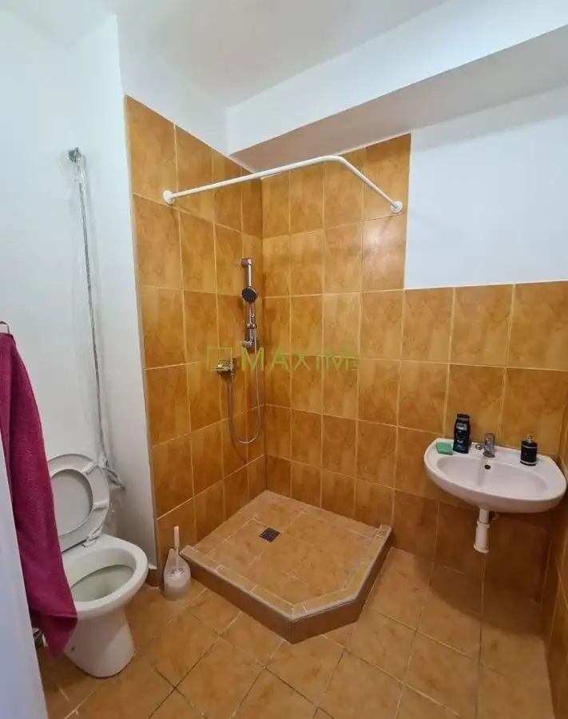
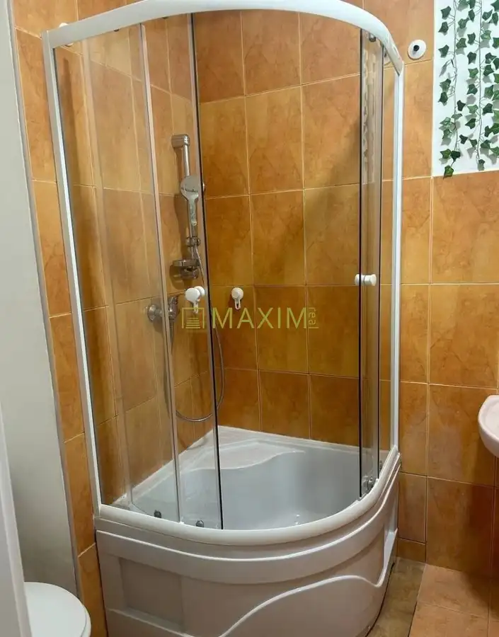

2- izbový byt na ulici Stavbárska
Vrakuňa, Bratislava



- Dispozícia2-izbový
- Plocha38 m²
- Poschodie4. z 10
- StavČiastočná rekonštrukcia
- VlastníctvoOsobné
O nehnuteľnosti
MAXIM REAL ponúka na predaj 2-izbový byt s výmerou 38 m² na Stavbárskej ulici 40 v Bratislave – Vrakuni. Byt sa nachádza na 4. poschodí z 10 v bytovom dome s novým výťahom. Bytový dom je zateplený, vstup je zabezpečený čipovým systémom a v bytovom dome aj v jeho okolí je k dispozícii kamerový systém.Dispozične byt ponúka dve samostatné izby, pričom každá má vlastné dvere, kuchyňu prepojenú s chodbou, kúpeľňu so sprchovacím kútom a WC a chodbu so šatníkovou skriňou.Byt sa predáva zariadený. Kuchyňa je vybavená elektrickým sporákom, chladničkou, práčkou, jedálenským stolom a stoličkami. V jednej izbe sa nachádza rozkladacia pohovka, konferenčný stolík, písací stôl, TV a TV stolík s úložným priestorom. Druhá izba disponuje novou posteľou a úplne novým, nepoužívaným matracom. Komfort bývania zvyšuje klimatizácia.Parkovanie je možné na verejných parkovacích miestach v okolí bytového domu.Byt je vhodný na vlastné bývanie pre jednotlivca alebo pár, ale vzhľadom na dispozíciu a lokalitu predstavuje aj zaujímavú investičnú príležitosť na prenájom.Cena nehnuteľnosti je 115.000,-Eur a bude k nej pripočítaná sprostredkovateľská odmena vo výške 5.000,- Eur, v ktorej sú zahrnuté aj všetky poplatky, právny a hypotekárny servis. Cena nehnuteľnosti so sprostredkovateľskou odmenou je spolu 120.000,-Eur celkom.Kontakt: Michal Šuchter, 0915 711 109 suchter@maximreal.sk- Kúpou získavate dobre dispozične riešenie nehnuteľnosti- Komfortne, rýchlo a na pešo dostupnosť všetkých služieb a zastávky MHDPrečo kupovať nehnuteľnosť prostredníctvom realitnej kancelárie Maxim Real?- Cena nehnuteľnosti je pre Vás konečná - neplatíte žiadne poplatky spojené s predajom a prevodom nehnuteľnosti.- Okrem bezplatného advokátskeho servisu, spracovania kúpno-predajných zmlúv , spracovania návrhu na vklad do katastra, hradíme tiež poplatky za podanie návrhu na vklad do katastra, správne poplatky za výpis z listu vlastníctva a poplatky za podpisy na kúpnych zmluvách.- K dispozícii je Vám hypotekárny špecialista, ktorý pohodlne zariadi Vašu hypotéku a vo väčšine prípadov dojednáva výhodnejšie podmienky, ako keď si klient hypotéku vybavuje sám. Jeho služby sú pre Vás zdarma a navyše máte v tomto prípade aj znalecký posudok zdarma.- Kompletný servis máte vyriešený pohodlne a bezpečne
Parametre
- Cena vrátane energií
- Nie
- Druh
- 2 izbový byt
- Dátum zverejnenia
- 05. 10. 2026
- Energetický certifikát budovy
- nie je
- Podlažie
- 4
- Počet nadzemných podlaží
- 10
- Rok výstavby
- 2026
- Stav nehnuteľnosti
- Čiastočná rekonštrukcia
- Typ
- Predaj
- Typ konštrukcie
- Iná
- Umiestnenie
- Ďalšie nadzemné podlažie
- Vlastníctvo
- Osobné
- Úžitková plocha
- 38 m²
Kde to je


Mohlo by Vás zaujímať
 BytNové
195 000 €2- izbový byt na Bernolákovej ulici v Senci
Senec
2-izbový62.5 m²2. podlažie
BytNové
195 000 €2- izbový byt na Bernolákovej ulici v Senci
Senec
2-izbový62.5 m²2. podlažie
 BytNové
265 000 €Ponúkame na predaj 4-izbový byt v Šamoríne
Šamorín
4-izbový79.3 m²1. podlažie
BytNové
265 000 €Ponúkame na predaj 4-izbový byt v Šamoríne
Šamorín
4-izbový79.3 m²1. podlažie
 BytNové
Cena na vyžádáníPre klienta hľadáme 2-izbový byt v Podunajských Biskupiciach
Podunajské Biskupice, Bratislava
2-izbový
BytNové
Cena na vyžádáníPre klienta hľadáme 2-izbový byt v Podunajských Biskupiciach
Podunajské Biskupice, Bratislava
2-izbový